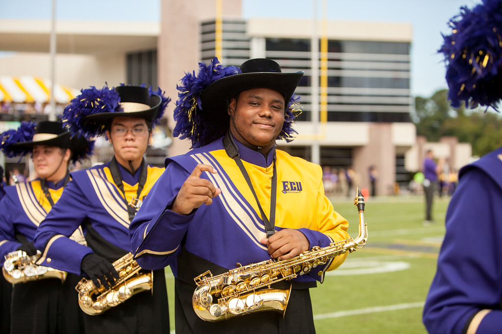

Devonte McNeill Autobiography
About me
Early Life
On January 2nd 1995 I was born to James and Mary McNeill at Scotland Memorial Hospital in Laurinburg, North Carolina. As I got older I began participating in multiple different sports. I played soccer, T-Ball, and pee-wee football. After a year or two of this it was clear that football was my love. I continued to play football throughout elementary school and middle school, going to various football camps and even winning multiple "Player of the Game" trophies for my role on the defensive line. I also learned to play saxophone in middle school and became obsessed with it much like football.
Puberty
As i progressed into Purnell Swett High School in Pembroke, North Carolina I continued to play football, but I also joined the marching band. The band director at the time knew I was a football player, and often worked with me on scheduling. I had grown into somewhat of a large character. My first physical in 9th grade I had grown to 5'10 and tipped the scales at 250lbs. As i continued to play football they kept me in the weight room so that by my junior year I had grown to be 6'3 and 300lbs. At the start of my senior year I was being sent to football camps to work out for schools across North Carolina, and even one in Virginia. I was a division 1 prospect for my role on the defense as defensive end. I led the defense in sacks per game and tackles for losses. Scouts would send mail to my coach asking for phone interviews and conference calls. However during my senior year I suffered an injury that changed my life forever. I took a blow from a players helmet to my knee suffering a partially torn acl, and my football career was over.
College Life
Throughout my highschool years I had visited many colleges close to home including UNC Pembroke, ECU, NC State, and even App State. I thought they were all decent, however my senior year I only applied to one school. ECU. ECU simply spoke to me more than all the other schools, and it also helped that they actually had the degree program that I wanted to participate in. I joined the largest student organization on campus, the Marching Pirates. I have been performing with the Marching Pirates for 4 years now, and love every minute of it. I am currently a senior ICTN major looking to graduate next fall or this upcoming summer.
